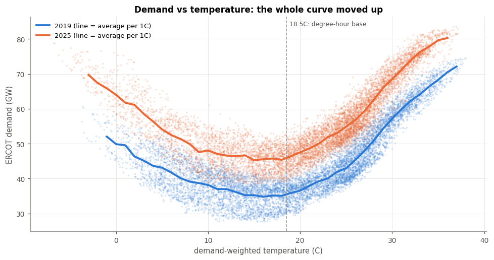
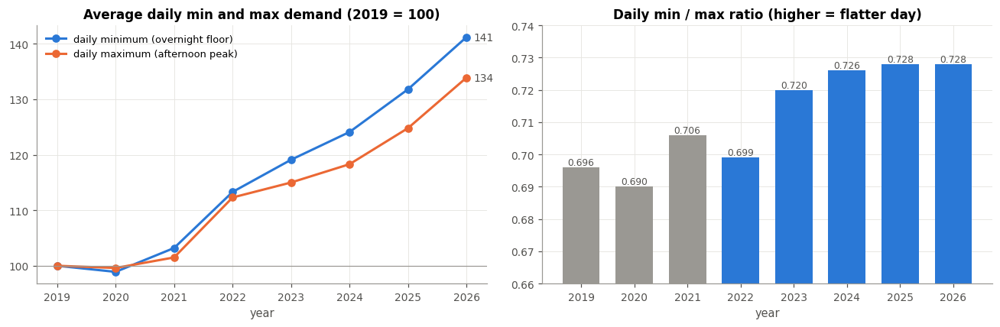
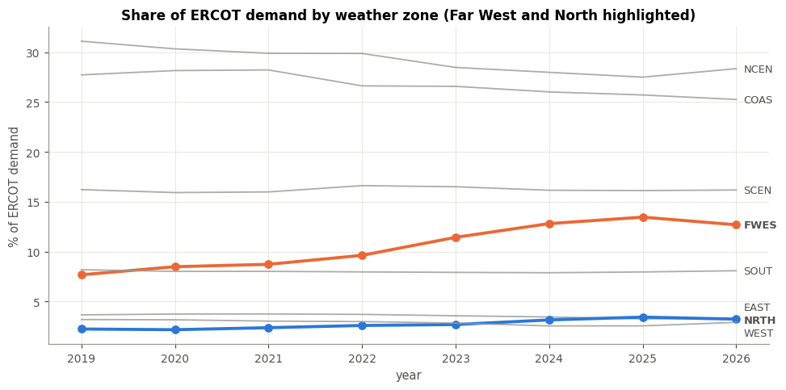
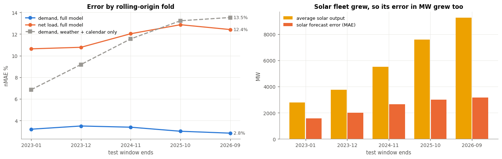
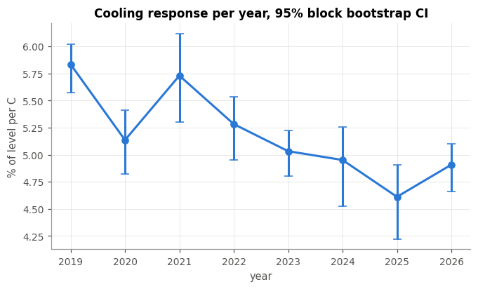
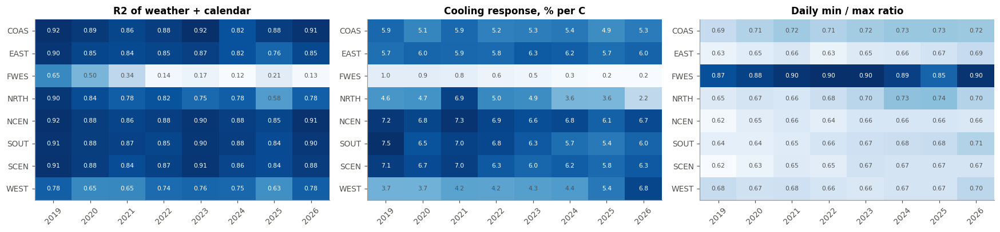
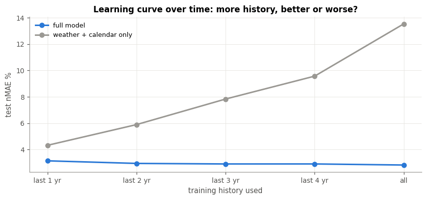
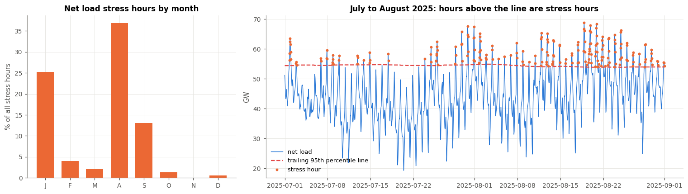

Always-on load raises the overnight floor faster than the afternoon peak
SupportedI compared daily minimum and maximum demand by year, demand share by weather zone and clusters of daily load shapes.
Arjun Abbimutt Nagendra Kumar · UT Austin · Fall 2026
Not for demand. Texas demand forecasts are as accurate as ever, but a shrinking share of that demand follows the weather. I used about 67,600 hours of ERCOT grid data from 2019 to 2026.
ERCOT runs the power grid that serves about 90% of Texas electricity demand. For decades Texas demand was fairly easy to predict: when it is hot, air conditioners run and demand climbs. Weather, time of day and day of week explained most of what the grid needed.
Data centers are now arriving in Texas at scale. ERCOT's queue of large-load connection requests passed 233 GW at the end of 2025, with more than 70% of it data centers (Utility Dive). A data center does not respond to the weather. It runs at a steady level, day and night, summer and winter.
So I asked: if a growing share of Texas demand no longer follows the weather, does Texas electricity become harder to predict?
I compared daily minimum and maximum demand by year, demand share by weather zone and clusters of daily load shapes.
I made 24-hour-ahead forecasts with linear and tree models and scored them year by year. Net load got harder, but only because solar grew.
I regressed demand on heat and cold for each year and each weather zone, with bootstrap confidence intervals.
I trained three classifiers and compared them with the yesterday rule. Yesterday is a strong rule and the models add a little.

I plotted every hour of 2019 and 2025: temperature across, demand up. The lines are the average at each degree.
The classic hockey stick: demand rises steeply above about 20C as air conditioning kicks in. In 2025 the whole curve sits about 10 GW higher, even on mild days.
Texas still responds to heat, but there is now a lot more demand that is there whatever the weather.

For every day, I took the lowest and highest hour of demand, then averaged by year.
Since 2019 the daily low rose 41% and the daily high 34%. The low-to-high ratio climbed from 0.70 to 0.73.
Days are getting flatter. Night-time demand is catching up with the afternoon, which is what always-on load looks like.

I split Texas demand into its 8 weather zones and tracked each zone's share.
Far West Texas went from 7.7% to 13.5% of all Texas demand (2019 to 2025). Houston and Dallas lost share even though they grew.
The new demand is landing in West Texas, where large industrial loads have been connecting.

Forecast error by test window end date (nMAE, lower is better)
Solar output and solar forecast error by test window end date (MW)
I trained a model to predict each hour 24 hours ahead from public weather, the calendar and recent demand. I tested it on five consecutive windows, always training only on the past.
Demand error stays around 3% and is lowest in the latest window. Net load error rises from 10.6% to 12.4%. A model using only weather and the calendar gets steadily worse. The solar fleet tripled, so solar forecast misses in MW doubled.
Hypothesis H2 was wrong for demand. Texas is still very predictable. What got harder is predicting how much other power plants must supply, and that is because of solar growth, not the new load.

Cooling response: extra demand per degree of heat, % of base demand
For each year, I measured how much demand rises per degree of heat, as a percent of the year's base demand. Error bars are 95% confidence intervals built by resampling whole weeks.
In 2019 each degree added 5.8% of base demand. In 2025, 4.6%. The early years (2019 to 2021) and recent years (2023 to 2025) differ by 0.70 points, with a 95% interval of -0.96 to -0.45 that does not touch zero.
The drop is real, not noise. Base demand grew 31% while the extra demand per degree grew only 4%. A shrinking share of Texas demand is about the weather.

I repeated the same weather test for each zone and year. R2 is the share of each zone's demand that weather and the calendar explain, where 1 means fully explained.
In Far West Texas that share fell from 0.65 to 0.21. Houston, Dallas, Austin and Corpus Christi stay between 0.82 and 0.92 in every year.
The change is concentrated in one region. That fits large always-on loads like data centers and crypto mining, though oil and gas activity there is another possible driver.

I predicted the most recent year using weather alone, trained on the last 1, 2, 3 or 4 years, or on everything.
With one year of history the error is 4.3%. With all years it is 13.5%. Adding older data makes the weather-only model worse. A full model that also knows recent demand stays near 3%.
The way Texas demand responded to weather in 2019 no longer fits 2026. To stay accurate, a forecast now has to know the rising always-on floor.

I called an hour "stressed" when net load was in the top 5% of the past year. Then I trained classifiers to flag those hours a day ahead and compared them with a simple rule: "stressed yesterday at this hour".
About 6% of hours are stress hours, three quarters of them in July to September. The simple rule scores 0.75 on AUC-PR (1 is perfect); the best model scores 0.77. With the alarm threshold chosen on held-out data, logistic regression misses half as many stress hours as the yesterday rule (66 vs 130) for 75 more false alarms.
Stress hours come in heatwave runs, so yesterday already tells you most of what you need. Models help a little, and let an operator choose how many false alarms to accept to miss fewer real stress hours.
Texas electricity is not harder to predict. Demand forecasts are as accurate as ever. But the reason they work has changed. A shrinking share of Texas demand follows the weather, the change is concentrated in Far West Texas where large new loads are connecting and a forecast that ignores the rising always-on floor falls apart. The real new difficulty is on the supply side: as solar grows, so do the megawatts it can miss by.
Everything is public and free, about 67,600 hours from January 2019 to September 2026.
Method. I predict each hour 24 hours ahead from weather, the calendar and recent demand, with linear models (OLS, Ridge and Lasso) and tree models (random forest and gradient boosting). I test on five consecutive windows and always train only on the past. Confidence intervals come from resampling whole weeks, because hourly errors are strongly correlated. The repo holds a frozen copy of the inputs, so anyone can rerun the notebook and get the same numbers.
None of these raised an error. Each would have quietly corrupted the results.